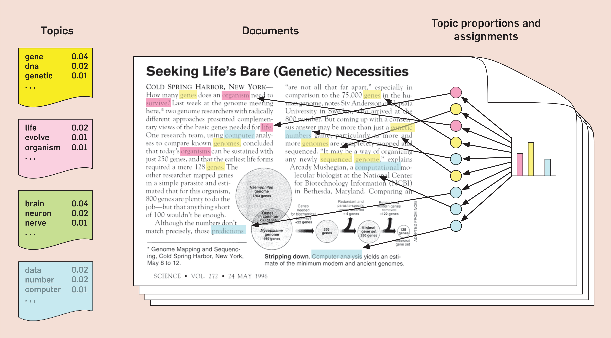

[08] Klassifisering av tekst – temamodellering

Martin Søyland <martin.soyland@stv.uio.no>
Disposisjon
- En øvelse i kategorisering
- Om emnemodeller
- ?
- ?
En øvelse i kategorisering
- Bruk 2 minutter på å diskutere hvordan følgende tekst kan kategoriseres (gis et emne):
I Norge har vi mer enn nok plass, vi har folk som vil kjøpe hus og bygge hus som har fått lån, vi har bygningsarbeidere og entreprenører, vi har materialer og redskap. Hva er flaskehalsen? Den eneste ting politikere og byråkrater må sørge for, nemlig tillatelse til å bygge. Det er ikke regulert eller planlagt nok områder til boligbygging, selv om grunneiere står i kø for å selge. Det vi har nok av fra naturens side, nemlig plass, har politikere og byråkrater greid å gjøre til mangelvare.
Carl I. Hagen, FrPs landsmøte 1988
Oversikt emnemodellering

Fra Blei (2012)
LDA
- LDA is the “simplest” form of topic models
- The intuition is that documents exhibit multiple topics (multi-membership model)
- Topics are defined to be a distribution over a fixed vocabulary
- Topics are assumed to be specified before any data has been generated
- Beforehand, we do not know the topics, per-document
topic distributions, and the per-document per-word topic assignments
- “Hidden structure”
- IMPORTANT: focus on understanding the application
of topic models and the foundation of the estimation
- We do not expect you to memorize formulas etc.
Assumptions
- LDA makes the “bag of words” assumption, that the
order of the words in the document does not matter.
- “While this assumption is unrealistic, it is reasonable if our only goal is to uncover the course semantic structure of the texts. h For more sophisticated goals such as language generation it is patently not appropriate”
- The order of documents does not matter
- “This assumption may be unrealistic when analyzing long-running collections that span years or centuries.”
- “One approach to this problem is the dynamic topic model”
- The number of topics is assumed known and fixed
- “The Bayesian non-parametric topic model provides an elegant solution: the number of topics is determined by the collection during posterior inference, and furthermore, new documents can exhibit previously unseen topics”
Approach
- We “start” with something -> update, update, update, until good changes disappear (iterations)
- Number of topics: how to pick?
- You need supply number of topics
- There are different ways to pick number of topics
- Making sense of topics
- Words describe topics. Texts define topic generation
- Validation
- Top scoring words
- Top scoring texts
- Context
STM
- Very similar to vanilla topic models, but with two main differences.
- Prevalence:
- As-if regression variable effect estimation
- Spectral initialization
- “deterministic inialization using the spectral algorithm”
- Roberts, M., Stewart, B., & Tingley, D. (2016). “Navigating the Local Modes of Big Data: The Case of Topic Models. In Data Analytics in Social Science, Government, and Industry.”
Assumptions
- Assumptions are similar to LDA
- The “spectral” configuration with K=0 does relax
the third assumption (number of topics is know and fixed)
- HOWEVER: “When init.type=”Spectral” and K=0 the number of topics is set […] this does not estimate the “true” number of topics and does not necessarily have any particular statistical properties for consistently estimating the number of topics. It can however provide a useful starting point.”
Topic Models in practice
Estimating LDA
Checking LDA results
STM with set K
Checking STM results
Estimating STM with “optimal” K
Do MPs in Party-Centered Systems Respond to Constituency Economic Shocks
- Early June 2014, the oil price was well above 100 dollars.
- During the autumn of 2014, the price fell week by week
- Below 50 dollars by January 1, 2015
STM model
Investigating the model
Finding topics on oil
- Let’s get back on track; we want oil!
Estimate effect
Visualize the effect
Model fit
- Semantically interpretable topic has two qualities:
- It is cohesive in the sense that high-probability words for the topic tend to co-occur within documents
- It is exclusive in the sense that the top words for that topic are unlikely to appear within top words of other topics
Semantic coherence:
Is maximized when the most probable words in a given topic frequently co-occur together
Semantically coherent models words which are most probable under a topic should co-occur within the same document.
semanticCoherence(stm_model, documents = dfm_object, M = n_top_words)– default: M = 10Exclusivity:
Includes some information on word frequency as well.
It is based on the FREX labeling metric with the weight set to .7 in favor of exclusivity by default.
exclusivity(stm_model, M = n_top_words, frexw = weight)– default: M = 10, frexw = 0.7While these measures are computationally efficient and interpretable, they cannot replace human judgment!
Search K
searchK()can help understand which models using different K are the most exclusive and cohesive models